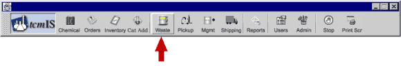
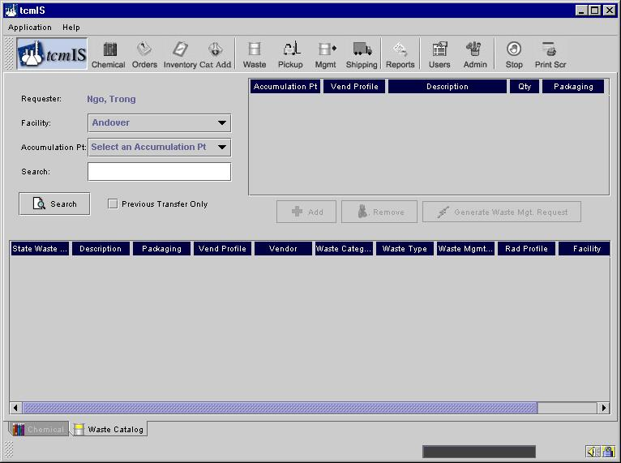

The section deals with the waste part of the tcmIS program.
tcm
IS™ Waste ManagementWelcome to tcmIS™ (Total Chemical Management Information System), the web-based chemical management information system that is the heart of the Chemical and Gas Management Program (CGMP). This section describes how you will be able to use tcmIS
™ for your waste management functions.The different parts of this section show how containerized waste transfers and pickups will be ordered through tcmIS™. For those individuals that have used the system for ordering chemicals, the tcmIS™ login for Waste Management is identical to that for Chemical Ordering.
Some client sites elected additional services under the CGMP program where Radian transfers containers from the point of generation to the 90-day generator storage area. It is very important for tcmIS™ users to understand the terminology of on-site transfer of waste containers and pickups for off-site disposal of waste containers.
After entering your
User Name on the login screen (typically your user name will be your employee number), and your password (initially assigned by your administrator), you will be logged in. Select the Waste Catalog process from the Application drop-down menu (as shown below).
That will take you to the screen shown below.

A waste transfer in tcmISä refers to the transfer of containerized waste from the point of generation to the 90-day generator storage area. A waste pickup in tcmISä refers to the shipment of containerized waste from the 90-day generator storage area to the off site disposal location. The waste transfer screen is used to request a transfer from the point of generation to the 90-day storage area. It also can be a valuable tracking tool for containers transferred from the point of generation to the 90-day generator storage area.
Please choose from the menu on the left to learn more.